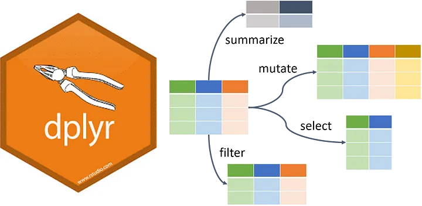
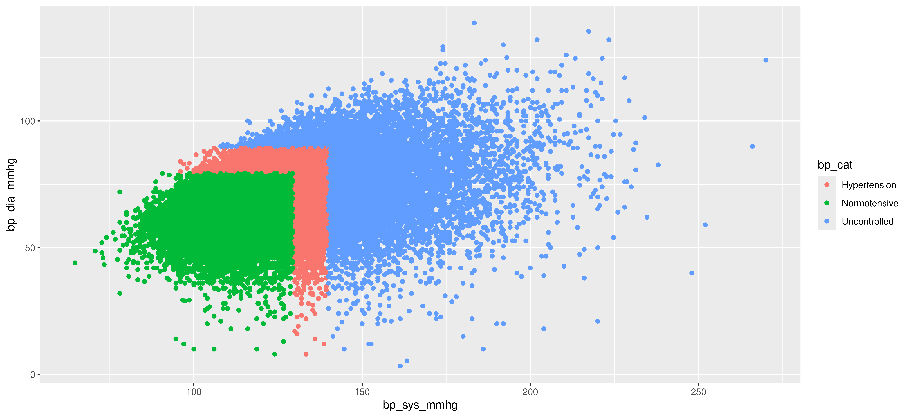

park(drive(start_car(find("keys")), to = "campus"))Transforming data with dplyr
Working with Factors
Agenda
Brief Review
Transformations with
dplyrFactors in R
Groups and Summarization
Brief Review - Workflows with the Pipe
Consider the following sequence of actions
- Find key
- Unlock car
- Start car
- Drive to school
- Park
Brief Review - Workflows with the Pipe
- Expressed as a set of nested functions in R:
- Writing it out using pipes gives a human intuitive structure:
find("keys") |>
start_car() |>
drive(to = "campus") |>
park()
Tip
Write data for computers but write code for humans
Brief Review - Piping to Other Arguments
- To send results to a function argument other than first one or to use the previous result for multiple arguments use
_
Brief Review - Piping to Other Arguments
- If using
%>%frommagrittr, you use.
Call:
lm(formula = bp_sys_mmhg ~ age, data = .)
Coefficients:
(Intercept) age
92.7765 0.6337 .can be passed to multiple arguments in the same function unlike|>For more details on
magrittr’s pipes check this 2021 blog and this post by Hadley comparing|>and%>%
Brief Review - Last Time on dplyr

Brief Review - Last Time on dplyr
First was isolation to focus on data of interest
filter()keeps rows that match specified conditions by resolving the variable to a logical vectorselect()extracts columns from a data set like$but more consistent and verstatile (i.e. better)arrange()will sort a data frame row-wise by a specified column / variable; can wrap the variable indesc()for descending orderslice()and its relatives index rows by location; like[]but better
Other
dplyrutility includes transformation and summarization
Transforming Data
Transformation - NHANES Data
With NHANES, today we have the full set of 51761 observations
glimpse(nhanes, width = 60)Rows: 51,761
Columns: 14
$ seqn <dbl> 2, 5, 6, 7, 10, 12, 13, 14, 15, 16…
$ exam <fct> 1999, 1999, 1999, 1999, 1999, 1999…
$ age <dbl> 77, 49, 19, 59, 43, 37, 70, 81, 38…
$ sex <fct> Male, Male, Female, Female, Male, …
$ race_ethnicity <fct> Non-Hispanic White, Non-Hispanic W…
$ education <fct> College graduate, College graduate…
$ bp_sys_mmhg <dbl> 100.6667, 122.0000, 114.6667, 125.…
$ bp_dia_mmhg <dbl> 56.66667, 82.66667, 68.00000, 80.0…
$ bp_controlled <chr> "Yes", "Yes", "Yes", "Yes", "No", …
$ bp_high_aware <dbl> 0, 1, 0, 1, 0, 1, 1, 0, 0, 0, 0, 0…
$ bp_meds <chr> "No", "Yes", "No", "No", "No", "Ye…
$ acr_mgg <dbl> 6.275862, 3.546512, 4.032258, 5.23…
$ chol_hdl_mgdl <dbl> 54, 42, 61, 105, 51, 38, 49, 40, 5…
$ chol_total_mgdl <dbl> 215, 279, 153, 245, 140, 156, 314,…Transformation - dplyr’s rules
dplyrhas the usualtidyverseconventionsFirst argument is always a data frame
Subsequent arguments say what to do with that data frame
Always return a data frame
. . .
It also follows standard R conventions (unlike some other packages)
Doesntn’t modify in place i.e. makes copies when assigning
Conducts lazy evaluation i.e. objects are only evaluated when called
Transformation - More of dplyr’s Functions
A non-comprehensive list of dplyr’s single-table functions
select,rename: select / rename specific columns by namepull: extract a data frame column as a vectorfilter: pick rows matching criteriaslice: pick rows using location indexingarrange: reorder rows by variablesmutate: add new variables based on existing variablessummarise: reduce variables to aggregate measurescount: special case ofsummarisethat computes frequencies.- Many more!
Transformation - Using mutate()
mutate()defines and inserts a new variable into a data frame
or tibbleThe new variable is derived from columns that already exist in the data frame via data masking
Other arguments control includes where the new variable is inserted
An important optional argument is
.bywhich we’ll discuss soon
Transformation - mutate() for Numerics
mutate()is useful for algebraic manipulationFor example, let’s make LDL cholesterol from total and
HDL cholesterol
nhanes <-
nhanes |>
mutate(chol_ldl_mgdl = chol_total_mgdl - chol_hdl_mgdl,
.before = chol_total_mgdl
)- Note the use of data masking
Transformation - Always Check Your Work
glimpse(nhanes, width = 60)Rows: 51,761
Columns: 15
$ seqn <dbl> 2, 5, 6, 7, 10, 12, 13, 14, 15, 16…
$ exam <fct> 1999, 1999, 1999, 1999, 1999, 1999…
$ age <dbl> 77, 49, 19, 59, 43, 37, 70, 81, 38…
$ sex <fct> Male, Male, Female, Female, Male, …
$ race_ethnicity <fct> Non-Hispanic White, Non-Hispanic W…
$ education <fct> College graduate, College graduate…
$ bp_sys_mmhg <dbl> 100.6667, 122.0000, 114.6667, 125.…
$ bp_dia_mmhg <dbl> 56.66667, 82.66667, 68.00000, 80.0…
$ bp_controlled <chr> "Yes", "Yes", "Yes", "Yes", "No", …
$ bp_high_aware <dbl> 0, 1, 0, 1, 0, 1, 1, 0, 0, 0, 0, 0…
$ bp_meds <chr> "No", "Yes", "No", "No", "No", "Ye…
$ acr_mgg <dbl> 6.275862, 3.546512, 4.032258, 5.23…
$ chol_hdl_mgdl <dbl> 54, 42, 61, 105, 51, 38, 49, 40, 5…
$ chol_ldl_mgdl <dbl> 161, 237, 92, 140, 89, 118, 265, 1…
$ chol_total_mgdl <dbl> 215, 279, 153, 245, 140, 156, 314,…Transformation - Conditional Variables
- But what about non-numeric outputs e.g. these in NHANES
albuminuria:‘Yes’ if ACR > 30 mg / g
‘No’ otherwise.
bp_cat:‘Normotensive’ if SBP < 130 and DBP < 80 mm Hg
‘Hypertension’ if SBP is 130 to < 140 or DBP is 80 to < 90 mm Hg
‘Uncontrolled’ if SBP is > 140 or DBP is > 90 mm Hg
Transformation - mutate() Conditionally
mutate()can also be used to create conditional variables
where one state is for condition x and another is for condition yInstead of numeric expressions, we can generate vectors of logicals which inform how the new variables are created
dplyrprovides two main functions for making conditional changes driven by logical vectorsif_else()for variables with 2 categories where one condition evaluates toTRUEand the other evaluates toFALSEcase_when()for variables with >2 categories which is more flexible but more complex to code
Transformation - mutate() with if_else()
albuminuriausingif_else():‘Yes’ if ACR > 30 mg / g
‘No’ otherwise.
nhanes <- nhanes |>
mutate(
albuminuria = if_else(
condition = acr_mgg > 30,
true = 'Yes',
false = 'No'
)
)if_else()relies on the boolean vector from condition followed by the true and false results
Transformation - Always Check Your Work
Yes, this will slow you down in the short term
Yes, it is very much worth it.
table(nhanes$albuminuria, nhanes$acr_mgg > 30)
FALSE TRUE
No 44460 0
Yes 0 6263Transformation - Using case_when()
bp_catusingcase_when():‘Normotensive’ if SBP < 130 and DBP < 80 mm Hg
‘Hypertension’ if SBP is 130 to < 140 or DBP is 80 to < 90 mm Hg
‘Uncontrolled’ if SBP is > 140 or DBP is > 90 mm Hg
nhanes <- nhanes |>
mutate(
bp_cat = case_when(
bp_sys_mmhg < 130 & bp_dia_mmhg < 80 ~ "Normotensive",
bp_sys_mmhg < 140 & bp_dia_mmhg < 90 ~ "Hypertension",
bp_sys_mmhg >= 140 | bp_dia_mmhg >= 90 ~ "Uncontrolled",
TRUE ~ NA_character_ # added for clarity
)
)Transformation - Always Check your Work!
- Get creative depending on what your output is
ggplot(nhanes) +
aes(x = bp_sys_mmhg, y = bp_dia_mmhg, col = bp_cat) +
geom_point()
Transformation - Question
- What kind of variables do you think
albuminuraandbp_catare?
. . .
nhanes |> select(c(albuminuria, bp_cat))# A tibble: 51,761 × 2
albuminuria bp_cat
<chr> <chr>
1 No Normotensive
2 No Hypertension
3 No Normotensive
4 No Hypertension
5 No Uncontrolled
6 Yes Uncontrolled
7 Yes Hypertension
8 No Hypertension
9 No Normotensive
10 No Uncontrolled
# ℹ 51,751 more rows- They’re characters but we want them as categorical variables
Factors for Categorical Data
Factors - Under the Hood in R
Factors are how we store true categorical information
Categorical variables have a fixed set of finite and pre-defined
values called levels
fctr <- factor(
x = c(1, 2, 2, 3),
levels = c(1,2,3),
labels = c("A", "B", "C")
)
fctr[1] A B B C
Levels: A B C- But under the hood, R is really storing these as integers 1, 2, 3, etc.
Factors - Their Behavior Can Be…Confusing
#Make a factor
x1 <- factor(c("Dec", "Apr", "May", "Jan"))
x1[1] Dec Apr May Jan
Levels: Apr Dec Jan May#Now sort it
sort(x1)[1] Apr Dec Jan May
Levels: Apr Dec Jan May#Now let's add "Mar" to it
c(x1, "Mar")[1] "2" "1" "4" "3" "Mar"#Instead lets replace May with Mar
x1[3] <- "Mar"
x1[1] Dec Apr <NA> Jan
Levels: Apr Dec Jan MayFactors - When to Convert to a Factor
Convert character/numeric vectors to factors if:
- You want to impose an ordering that is not alphabetical
count(nhanes, bp_cat)# A tibble: 3 × 2
bp_cat n
<chr> <int>
1 Hypertension 10325
2 Normotensive 31075
3 Uncontrolled 10361Factors - When to Convert to a Factor
Convert character/numeric vectors to factors if:
- You want to impose an ordering that is not alphabetical
nhanes <- nhanes |>
mutate(
bp_cat = factor(
x = bp_cat,
levels = c('Normotensive', 'Hypertension', 'Uncontrolled')
)
)
count(nhanes, bp_cat)# A tibble: 3 × 2
bp_cat n
<fct> <int>
1 Normotensive 31075
2 Hypertension 10325
3 Uncontrolled 10361Factors - When to Convert to a Factor
Convert character/numeric vectors to factors if:
- You have a numeric variable that should be categorical or groups
count(nhanes, bp_high_aware)# A tibble: 2 × 2
bp_high_aware n
<dbl> <int>
1 0 34514
2 1 17247Factors - When to Convert to a Factor
Convert character/numeric vectors to factors if:
- You have a numeric variable that should be categorical or groups
nhanes <- nhanes |>
mutate(
bp_high_aware = factor(
x = bp_high_aware,
levels = c(0, 1),
labels = c("No", "Yes")
)
)
count(nhanes, bp_high_aware)# A tibble: 2 × 2
bp_high_aware n
<fct> <int>
1 No 34514
2 Yes 17247Factors - Additional Utility with forcats
Base R has very few functions to meaningfully engage with
factors, instead we’ll use theforcatspackageNearly every function begins with
fct_Much of the confusing factor behavior with factors we discussed can be avoided by using
forcats
Factors - Relevel Factors
- Relevel factors (change their order) with
fct_relevel
library(forcats)
nhanes |>
mutate(
bp_cat = fct_relevel(
bp_cat, 'Uncontrolled', 'Hypertension'
)
) |>
count(bp_cat)# A tibble: 3 × 2
bp_cat n
<fct> <int>
1 Uncontrolled 10361
2 Hypertension 10325
3 Normotensive 31075fct_reorder()uses numeric/variable reordering e.g. by frequency
Factors - Coding NA to its Own Level
fct_na_value_to_level()sets factors with missing values (i.e.NA) levels to their own category
count(nhanes, education)# A tibble: 4 × 2
education n
<fct> <int>
1 Less than high school 14389
2 High school/some college 26076
3 College graduate 10344
4 <NA> 952Factors - Coding NA to its Own Level
nhanes <- nhanes |>
mutate(
education = fct_na_value_to_level(
f = education,
level = 'Missing'
)
)
count(nhanes, education)# A tibble: 4 × 2
education n
<fct> <int>
1 Less than high school 14389
2 High school/some college 26076
3 College graduate 10344
4 Missing 952- Can do the reverse and convert levels to
NAwithfct_na_level_value()
Factors - Add Additional Levels
- Add levels to a factor with
fct_expand()
nhanes <- nhanes |>
mutate(
education = fct_expand(
f = education,
"Graduate Degree"
)
)
count(nhanes, education, .drop = FALSE)# A tibble: 5 × 2
education n
<fct> <int>
1 Less than high school 14389
2 High school/some college 26076
3 College graduate 10344
4 Missing 952
5 Graduate Degree 0Factors - Dropping Unused Levels
- Drop unused levels with
fct_drop()
nhanes <- nhanes |>
mutate(
education = fct_drop(
f = education
)
)
count(nhanes, education, .drop = FALSE)# A tibble: 4 × 2
education n
<fct> <int>
1 Less than high school 14389
2 High school/some college 26076
3 College graduate 10344
4 Missing 952Factors - Collaps Levels Together
- Collapse factors (lump categories) with
fct_collapse()
nhanes |>
mutate(
bp_cat = fct_collapse(
bp_cat,
"Hypertensive" = c("Hypertension", "Uncontrolled")
)
) |>
count(bp_cat)# A tibble: 2 × 2
bp_cat n
<fct> <int>
1 Normotensive 31075
2 Hypertensive 20686fct_recode()is a more explicit but more powerful recoding tool
Factors - Collaps Levels Together
- Explicitly recode levels manually with
fct_recode()
nhanes |>
mutate(
education = fct_recode(
education,
# new level = old level
'less_than_hs' = 'Less than high school',
'hs_some_college' = 'High school/some college',
'college_grad' = 'College graduate'
)
) |>
count(education)# A tibble: 4 × 2
education n
<fct> <int>
1 less_than_hs 14389
2 hs_some_college 26076
3 college_grad 10344
4 Missing 952Summarization and Groups
Summarization - Aggregation with dplyr
In
dplyryou can usesummarise()to summarize your dataAs expected, using
summarise()on a data frame returns a data frame
nhanes |>
summarise(
mean_sbp = mean(bp_sys_mmhg),
mean_dbp = mean(bp_dia_mmhg),
prevalence_alb = mean(albuminuria == 'Yes', na.rm = TRUE)
)# A tibble: 1 × 3
mean_sbp mean_dbp prevalence_alb
<dbl> <dbl> <dbl>
1 124. 70.5 0.123- Other aggregations like
sum(),count(),n(), etc work as well
Summarization - Using .by
- A very powerful argument is
.bywhich lets you select columns to group by for the summarise operations
nhanes |>
summarise(
mean_sbp = mean(bp_sys_mmhg),
prevalence_alb = mean(albuminuria == 'Yes', na.rm = TRUE),
.by = sex)# A tibble: 2 × 3
sex mean_sbp prevalence_alb
<fct> <dbl> <dbl>
1 Male 126. 0.121
2 Female 123. 0.126Grouping - Using group_by()
- The
group_by()function gives the same functionality
nhanes |>
group_by(sex) |>
summarise(mean_sbp = mean(bp_sys_mmhg),
prevalence_alb = mean(albuminuria == 'Yes', na.rm = TRUE))# A tibble: 2 × 3
sex mean_sbp prevalence_alb
<fct> <dbl> <dbl>
1 Female 123. 0.126
2 Male 126. 0.121- Both
mutate()andsummarise()honor groups;mutate()on groups is useful when applying values such as thefirst()observation or summary measures
Grouping - Using group_by()
group_by()can accept multiple variables for functions applied to categorical combinations
nhanes |>
group_by(sex, education) |>
summarise(mean_sbp = mean(bp_sys_mmhg),
prevalence_alb = mean(albuminuria == 'Yes', na.rm = TRUE))# A tibble: 8 × 4
# Groups: sex [2]
sex education mean_sbp prevalence_alb
<fct> <fct> <dbl> <dbl>
1 Female Less than high school 127. 0.172
2 Female High school/some college 123. 0.120
3 Female College graduate 119. 0.0797
4 Female Missing 111. 0.126
5 Male Less than high school 127. 0.156
6 Male High school/some college 126. 0.114
7 Male College graduate 124. 0.0919
8 Male Missing 117. 0.0633Grouping - Using ungroup()
Note,
sexwas still applied as a group to the NHANES summaryA grouped data frame or tibble is structurally the same as an ungrouped, the distinction is how downstream functions are applied
group_by()“unwraps” as functions are applied to the grouped data frame, eventually returning you to your original ungrouped dataframeWhen using nested grouping, you may need to use
ungroup()to get back to your original data frame or tibbleAlways check your work!!
Learning More
As always, cheatsheets available on the tidyverse website(https://rstudio.cloud/learn/cheat-sheets){.external target=“_blank”}
Package websites:
dplyr: https://dplyr.tidyverse.org/index.htmlforcats: https://forcats.tidyverse.org/
dplyrhas MANY functions we didn’t discuss that can be very useful for isolation, transformation, and summarization